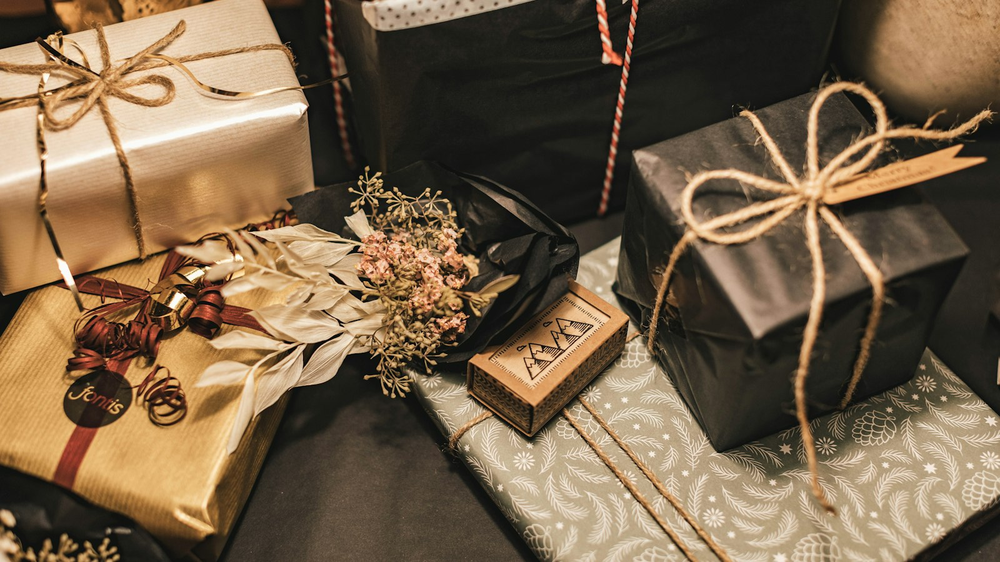
corporate-gifting-ontario-cra-rules-budgets-timing
Wrapped gifts in kraft and black paper. Photo: Nina Mercado, Unsplashontario-gifting-calendar-thanksgiving-to-holidays
Autumn leaves and a 'give thanks' note. Photo: Priscilla Du Preez, Unsplash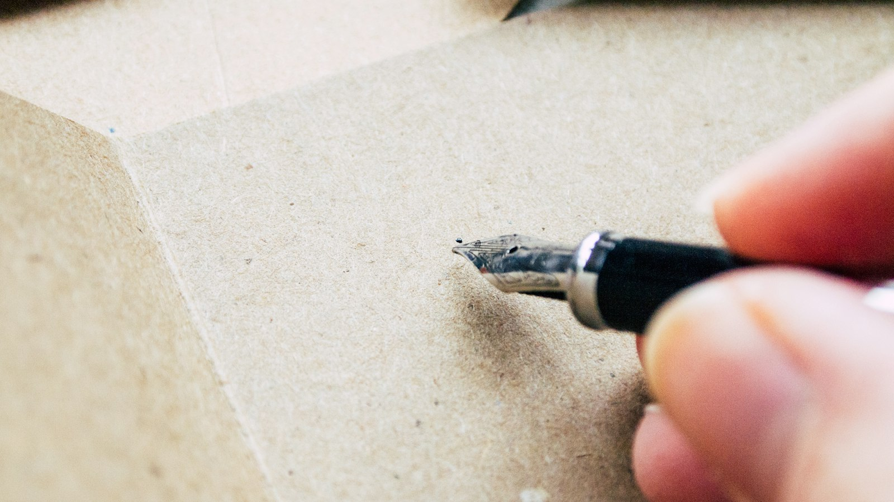
what-to-write-in-a-gift-message
Hand writing a card with a fountain pen. Photo: Esther Ní Dhonnacha, Unsplash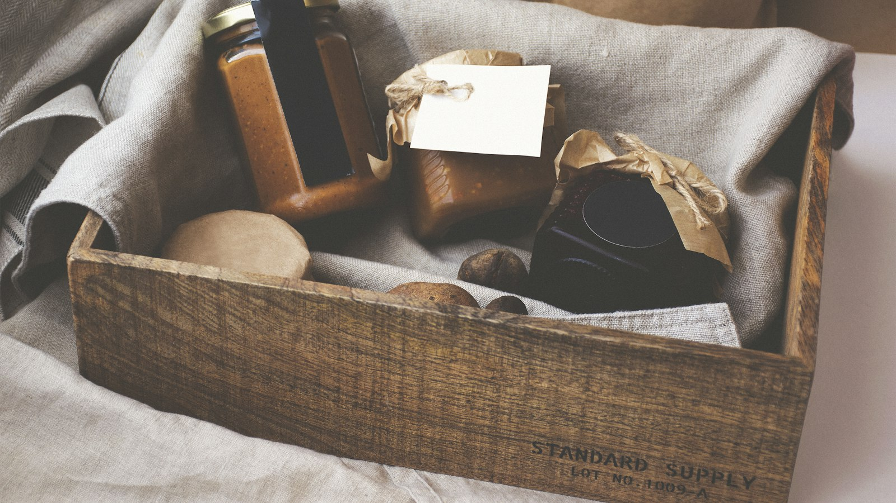
how-to-choose-a-gift-basket
Wooden crate with jars and a blank tag. Photo: Dmitry Mashkin, Unsplashdiwali-gift-hampers-gta
Lit diyas on a tray with petals. Photo: Udayaditya Barua, Unsplashreal-estate-closing-gifts-gta
Hand holding a house key by a door. Photo: Jakub Żerdzicki, Unsplash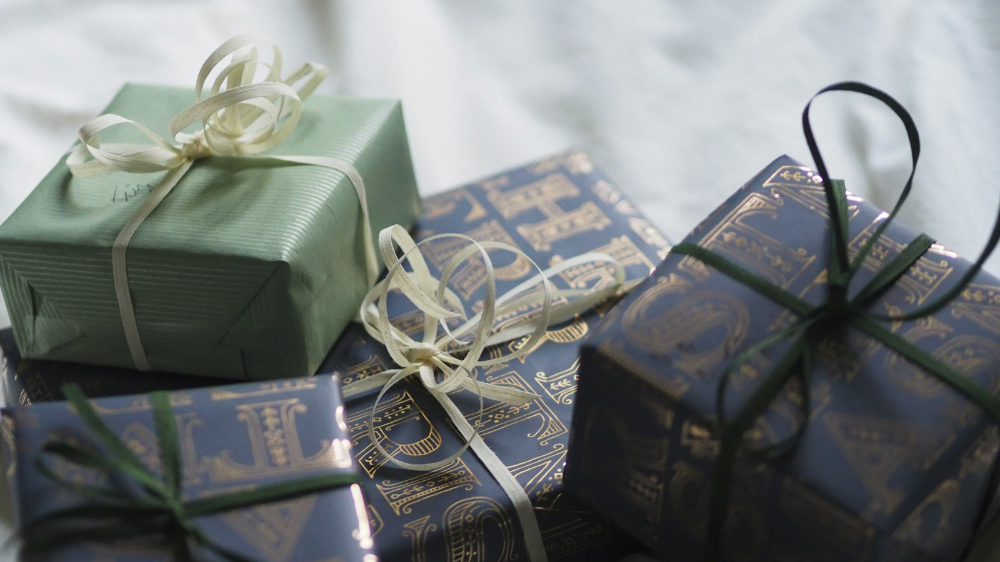
corporate-gift-hampers-how-to-choose
Stack of gifts wrapped in green and navy. Photo: Laura Chouette, Unsplashbirthday-gift-basket-ideas
Pink gift box with gold ribbon and confetti. Photo: Ekaterina Shevchenko, Unsplashanniversary-gift-ideas-by-year
Pink peonies in a vase. Photo: Alisa Anton, Unsplashchristmas-gift-baskets-gta
Wrapped wicker baskets under fairy lights. Photo: Muneer ahmed ok, Unsplash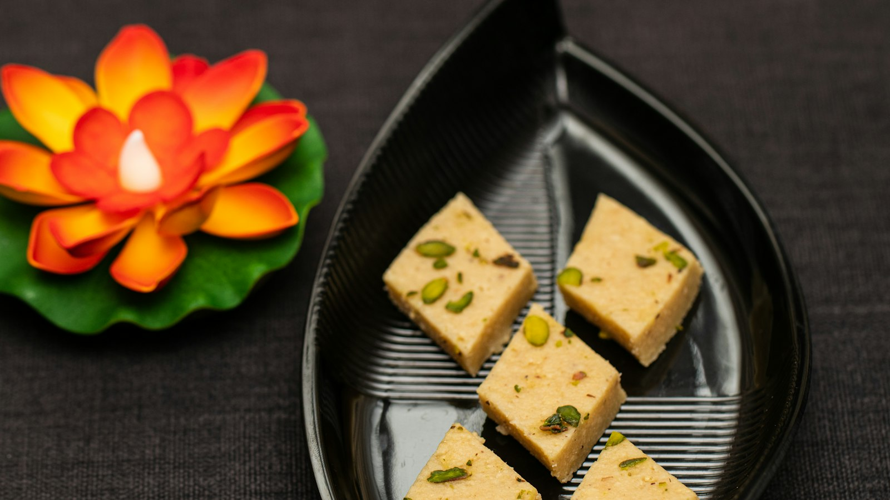
what-to-bring-to-a-diwali-celebration
Plate of mithai beside a lotus candle. Photo: VD Photography, Unsplashchristmas-gifts-for-clients-employees-coworkers
Christmas tree with gifts in an office. Photo: Invest Europe, Unsplash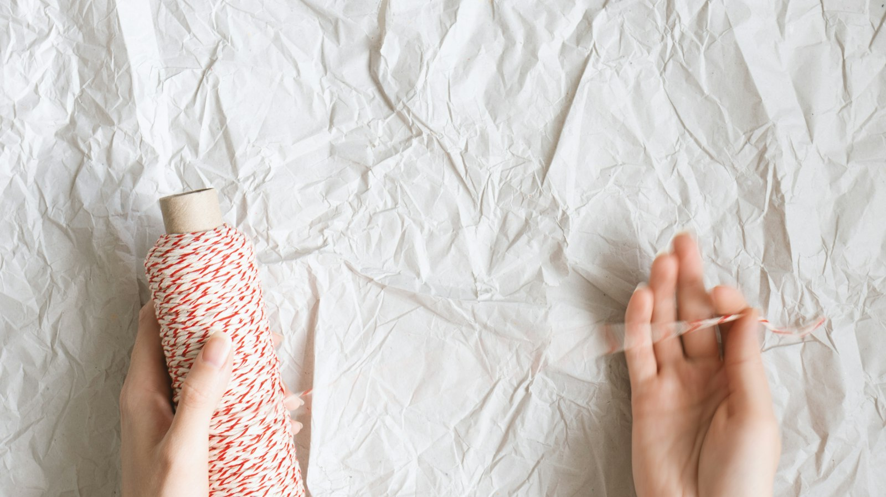
velvea-gift-hampers-gta
Hands unwinding twine over wrapping paper. Photo: Olga Kozachenko, Unsplash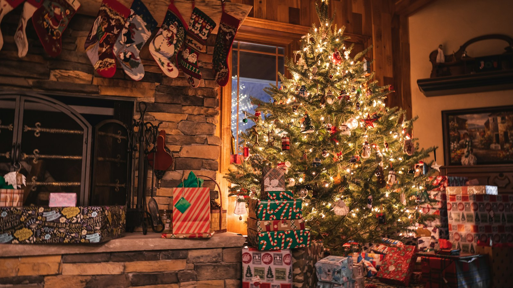
christmas-gift-ideas-for-family-and-friends
Christmas tree and stockings by a fireplace. Photo: Mike Cox, Unsplash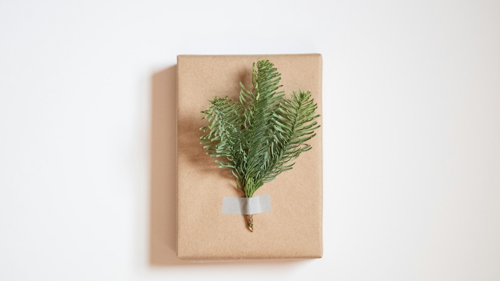
corporate-christmas-gifts-that-feel-personal
Kraft-wrapped gift with a sprig of pine. Photo: Fiona Murray-deGraaff, Unsplash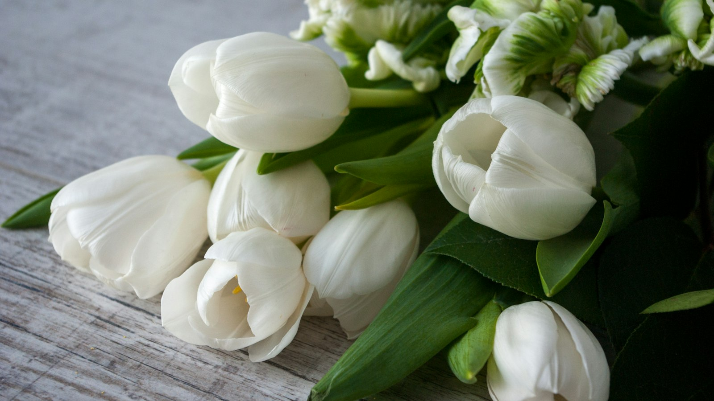
sympathy-gift-ideas-what-to-send-when-someone-dies
White tulips on a wooden table. Photo: Moon Moons, Unsplash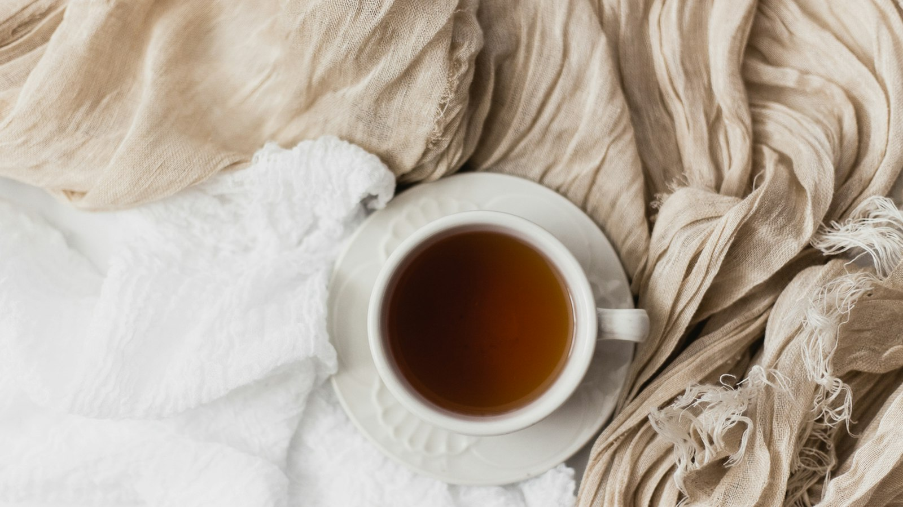
get-well-gift-ideas-after-surgery-illness
Cup of tea on soft linen. Photo: Sixteen Miles Out, Unsplash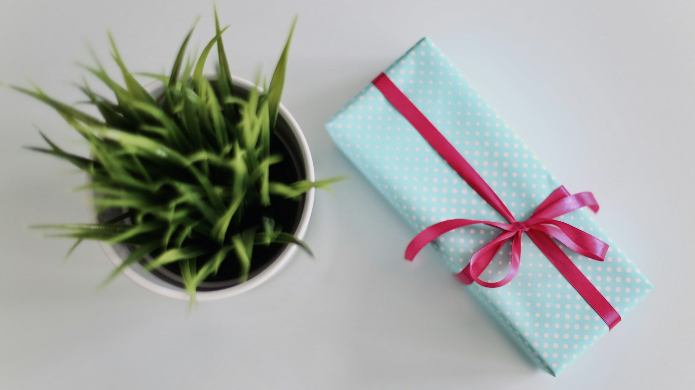
housewarming-gift-ideas-how-much-to-spend
Wrapped gift beside a potted plant. Photo: Antonio Janeski, Unsplash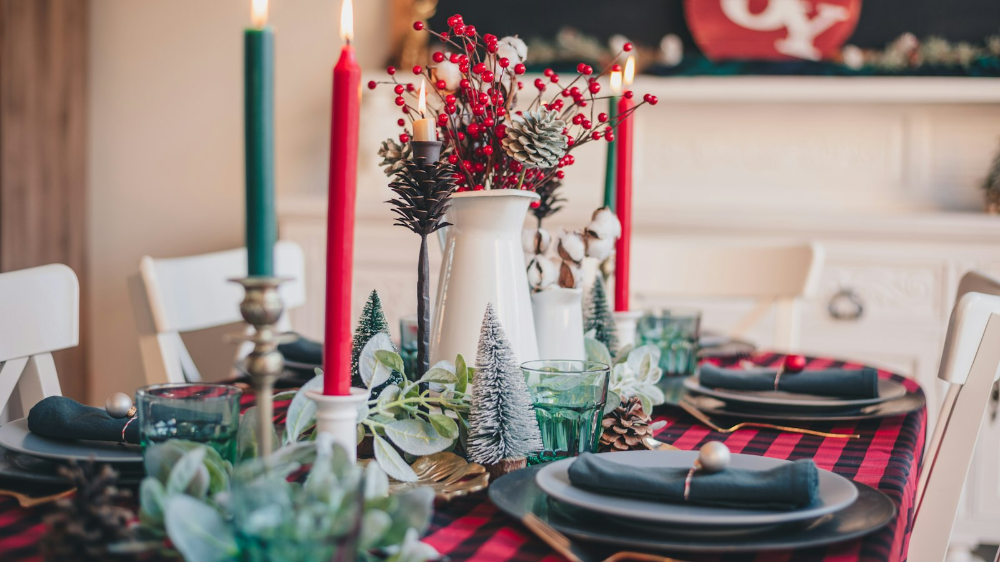
christmas-host-gifts-what-to-bring-to-christmas-dinner
Christmas dinner table with candles. Photo: Libby Penner, Unsplashretirement-gift-ideas-coworker-boss-parent
Two blue chairs on a beach. Photo: Aaron Burden, Unsplash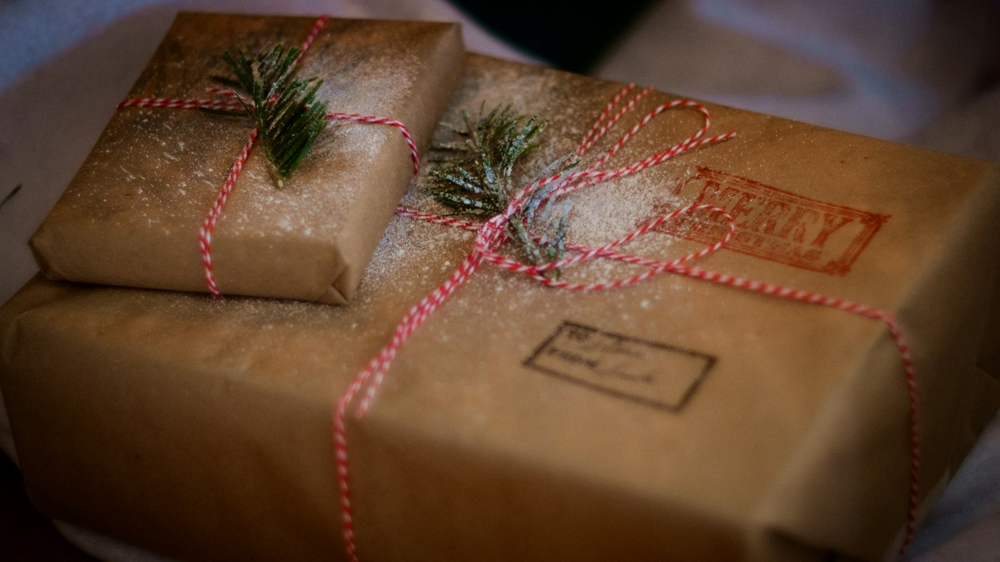
last-minute-christmas-gifts-gta-delivery-deadlines
Kraft parcels tied with twine and pine. Photo: Nathan Lemon, Unsplashsend-a-gift-to-canada-from-usa-uk-abroad
Small kraft parcels tied with string. Photo: Leone Venter, Unsplashmilestone-birthday-gift-ideas-30th-40th-50th-60th-70th
Birthday cake covered in lit candles. Photo: Richard Burlton, Unsplashcustom-gift-hamper-how-to-order
Gift being wrapped with scissors and gold ribbon. Photo: Jess Bailey, Unsplashteacher-christmas-gifts-how-much-to-spend-class-gift
Wrapped gift with a pencil and eucalyptus. Photo: Joanna Kosinska, Unsplash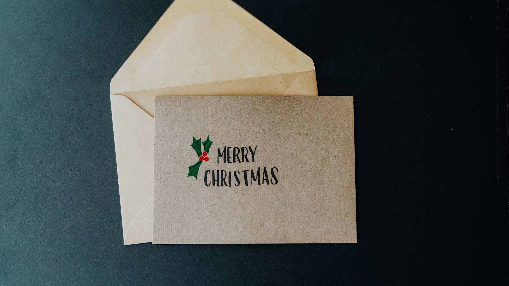
holiday-tipping-guide-canada-who-to-tip-how-much
Merry Christmas card in an envelope. Photo: Kelly Sikkema, Unsplashgifts-for-remote-employees-canada
Ribbon-tied box on a home desk. Photo: Nicole Wolf, Unsplashthank-you-gifts-for-nurses-doctors-hospital-staff
Thank-you note in an envelope with flowers. Photo: Towfiqu barbhuiya, Unsplash